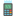

Seleccione su PinPad

|
{{ pinpad.pinpad_sn }} {{ pinpad.descripcion }} | {{ pinpad.area }} |
Pinpad no encontrado. Verifique el SN y si tiene instalado el servicio Descargar Instalador.
Pinpad conectado con existo!
Mi PinPad
{{assignedPinpad.pinpad_sn}}